Widgets are a feature introduced in Android 1.5. A widget displays an application's most important or timely information at a glance, on a user's Home screen. The standard Android system image includes several examples of widgets, including widgets for Analog Clock, Music, and other applications.
Users pick the widgets they want to display on their Home screens by touching & holding an empty area of the Home screen, selecting Widgets from the menu, and then selecting the widget they want.
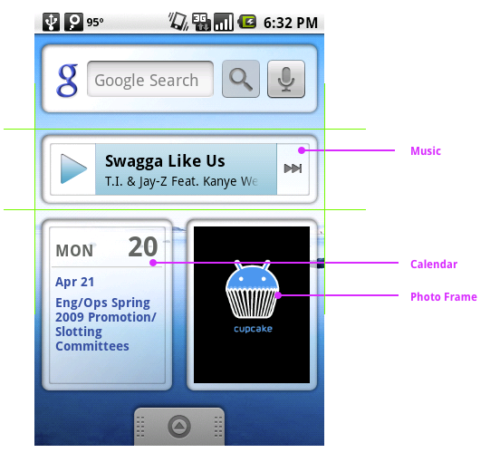
This document describes how to design a widget so it fits graphically with other widgets and with the other elements of the Android Home screen. It also describes some standards for widget artwork and some widget graphics tips and tricks from the Android team.
For information about developing widgets, see the AppWidgets section of the Developer's Guide and the AppWidgets blog post.
Typical Android widgets have three main components: A bounding box, a frame, and the widget's graphical controls and other elements. Well-designed widgets leave some padding between the edges of the bounding box and the frame, and between the inner edges of the frame and the widget's controls. Widgets designed to fit visually with other widgets on the Home screen take cues from the other elements on the Home screen for alignment; they also use standard shading effects. All of these details are described in this document.
Standard Widget Sizes in Portrait Orientation
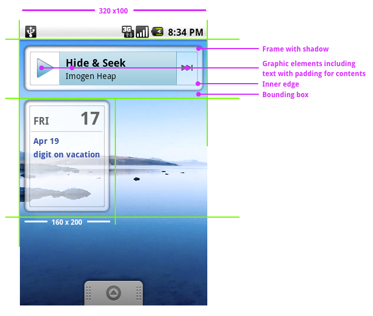
Standard Widget Sizes in Landscape Orientation
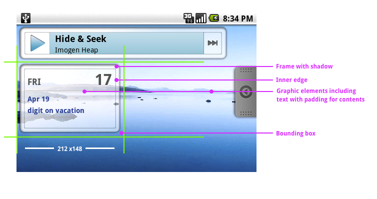
The most effective widgets display your application's most useful or timely data in the smallest widget size. Users will weigh the usefulness or your widget against the portion of the Home screen it covers, so the smaller the better.
All widgets must fit within the bounding box of one of the six supported widget sizes, or better yet, within a pair of portrait and landscape orientation sizes, so your widget looks good when the user switches screen orientations.
Standard widget sizes illustrates the bounding dimensions of the six widget sizes (three in portrait and three in landscape orientation).
Standard widget frames illustrates the standard frames for the six widget sizes, with links so you can download copies for your own use. You don't have to use these frames for your widget, but if you do, your widgets are more likely to fit visually with other widgets.
Again, you don't have to use this effect, but Standard widget shadows shows the Photoshop settings used for standard widgets.
You can download a Photoshop file that contains the three states of the Play button, taken from the Music widget, to analyze the Photoshop settings used for the three standard button effects.
Widget alignment tips and tricks describes some techniques for aligning your widget's graphics inside the standard frames, along with a few other widget graphics tricks.
Windows graphics file format describes the correct settings for your widget graphics files.
There are six standard widget sizes, based on a Home screen grid of 4 x 4 (portrait) or 4 x 4 (landscape) cells. These dimensions are the bounding boxes for the six standard widget sizes. The contents of typical widgets don't draw to the edge of these dimensions, but fit inside a frame withing the bounding box, as described in Designing a widget.
In portrait orientation, each cell is 80 pixels wide by 100 pixels tall (the diagram shows a cell in portrait orientation). The three supported widget sizes in portrait orientation are:
| Cells | Pixels |
|---|---|
| 4 x 1 | 320 x 100 |
| 3 x 3 | 240 x 300 |
| 2 x 2 | 160 x 200 |
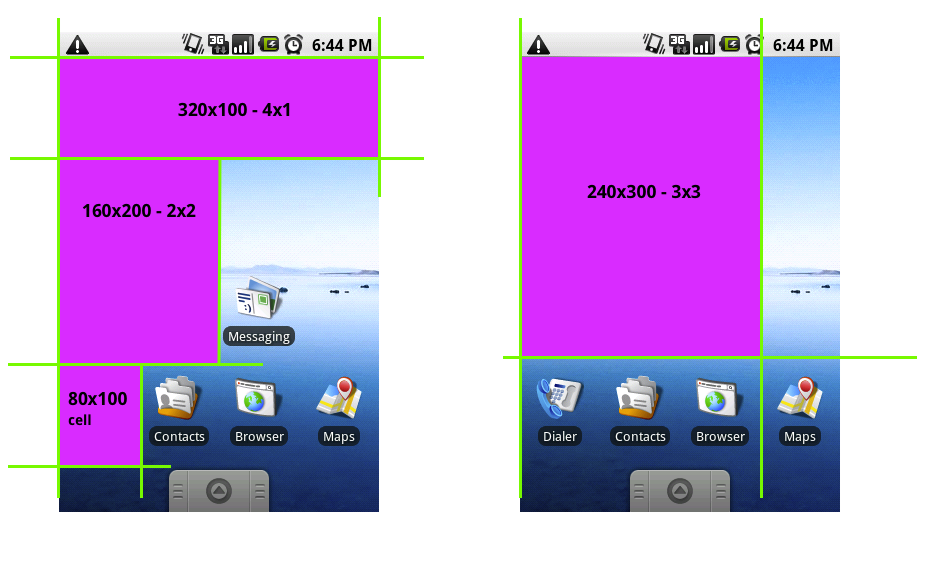
In landscape orientation, each cell is 106 pixels wide by 74 pixels tall. The three supported widget sizes in landscape orientation are:
| Cells | Pixels |
|---|---|
| 4 x 1 | 424 x 74 |
| 3 x 3 | 318 x 222 |
| 2 x 2 | 212 x 148 |
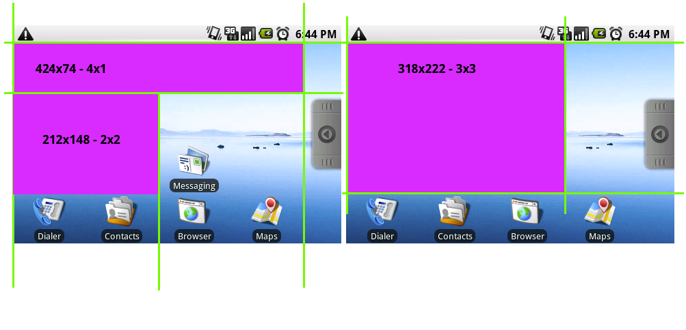
For each of the six standard widget sizes there is a standard frame. You can click the images of the frames in this section to download a Photoshop file for that frame, which you can use for your own widgets.
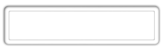
4x1_Widget_Frame_Portrait.psd
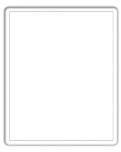
3x3_Widget_Frame_Portrait.psd
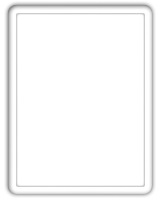
2x2_Widget_Frame_Portrait.psd
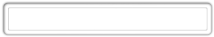
4x1_Widget_Frame_Landscape.psd
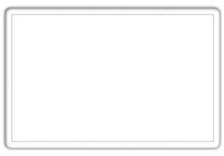
3x3_Widget_Frame_Landscape.psd
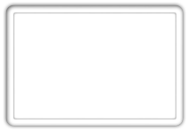
2x2_Widget_Frame_Landscape.psd
You can apply a shadow effect to your widget's artwork, so it matches other standard Android widgets, using the following settings in the Photoshop Layer Style dialog box.
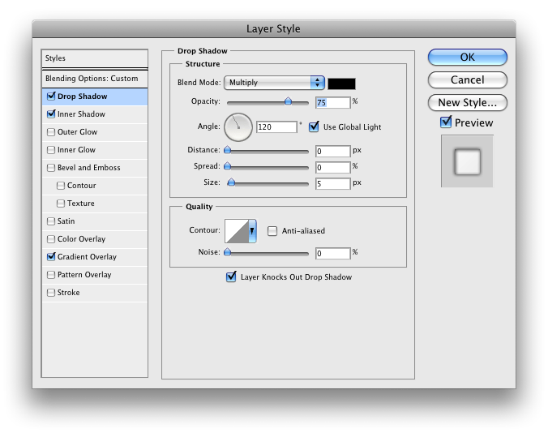
The Android team has developed a few tricks for aligning widget artwork within standard widget bounding boxes and frames, so the widget aligns visually with other widgets and the other elements of the Home screen, as well as other techniques for creating widgets.
Cut the widget artwork asset" based on the full size of a cell, including any padding you want. (That is, for a 4 x 1 widget, cut the asset at 320 by 100 pixels.)
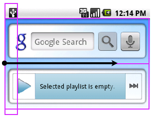
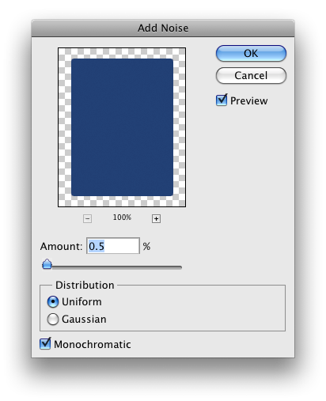
Note: The current Android widget templates were designed using a custom gradient angle, which means the 9-patch techniques can't be used to optimize the size of the asset. However, 9-patch techniques were used to set the content area padding.
XML:. This
technique references the original artwork, in this case
"background.9.png", and instructs the device to dither it as
needed.Save your widget artwork using the appropriate bounding box size in PNG-24 format on a transparent background and in 8-bit color.
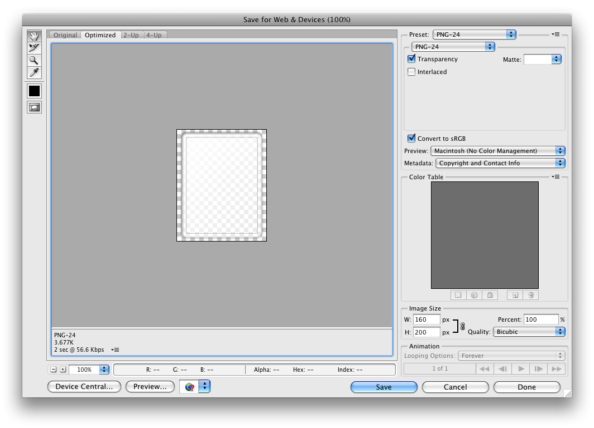